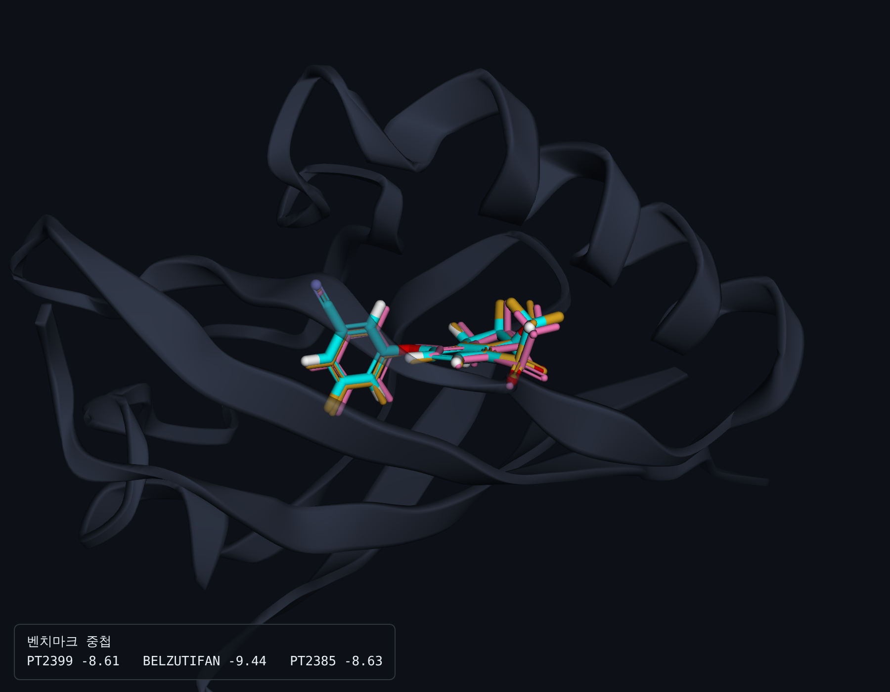
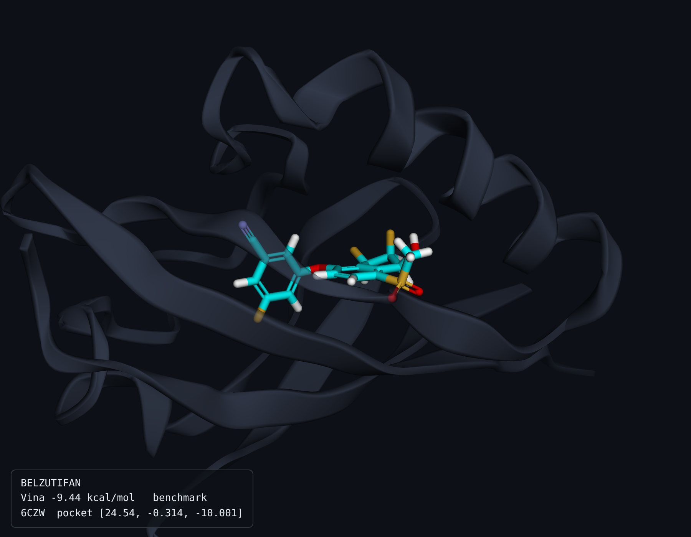
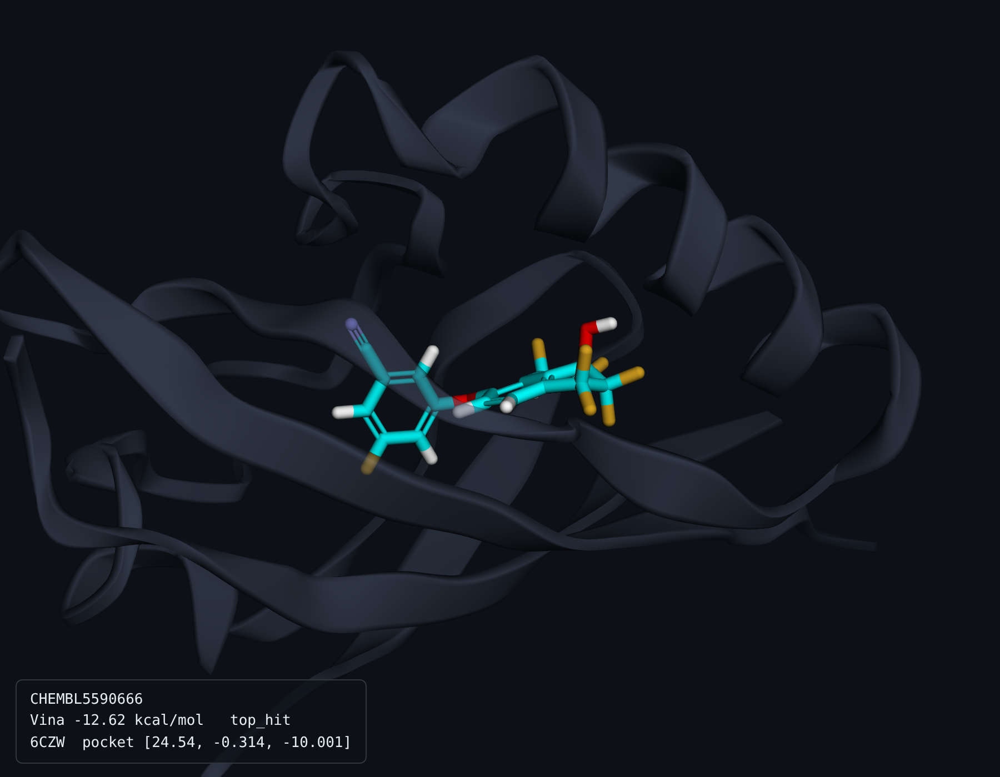

신장암(ccRCC) 구동 전사인자 EPAS1에 대한 2,157개 화합물 도킹. 구조 선택
편향을 재기 위해 두 수용체 구조에 같은 라이브러리를 각각 도킹했다.
검증 게이트
PASS · 3/3
EF1% 32.68 · AUC 0.772 · BEDROC 0.670. 상위 22개 중 20개가 활성.
합의 성공 기준
미달
belzutifan 상위 1% 목표 → 실제 2.318%. v1의 22.3%에서 9.6배 개선했으나 선을 넘지 못함.
구조 선택 편향
BIAS_LIKELY
조기 인식 지표가 최대 8.0배 차이. 상위권 순위의 상당 부분이 구조 선택에서 나왔다.
두 팔 대조
같은 라이브러리(2,157개, 활성 60개), 같은 도킹 설정. 차이는 수용체 구조 하나뿐이다.
treatment는 벤치마크와 닮은 리간드가 결합한 구조를 유사도로 골랐고, control은 가장 닮지
않은 구조를 강제 지정했다3.
항목
treatment
control
배수
구조
6CZW (FO7, PT1940)
3H82 (020)
—
해상도
1.60 Å
1.50 Å
대조군이 더 좋음
벤치마크 유사도
0.400
0.071
5.6×
EF1%
32.68
8.17
4.0×
EF5%
12.32
5.66
2.2×
AUC
0.7717
0.7161
+0.056
BEDROC (α=20)
0.6697
0.3004
2.2×
최고 스코어
−12.62
−9.92
—
게이트 판정
PASS 3/3
PASS 3/3
—
AUC만 보면 편향을 놓친다. AUC 차이는 0.056에 그치지만
EF1%는 4.0배, 벤치마크 백분위는 8.0배 벌어졌다. AUC는 전역 분리도라 상위권 재배열에
둔감하다. 히트 선별이 일어나는 곳은 상위 1%이므로 조기 인식 지표로 판정해야 한다.
첫 구현이 AUC만 보고 BIAS_MODERATE로 판정한 것은 오판이었고, 이 데이터를
보고 수정했다.
벤치마크 회수
승인약과 임상 화합물이 라이브러리 어디에 랭크됐는가. 어느 팔에서도 belzutifan은
상위 1%에 들지 못했다.
화합물
treatment 백분위
control 백분위
개선
상위 1%
PT2399
0.881%
9.921%
11.3×
treatment ○
belzutifan
2.318%
18.544%
8.0×
양쪽 ✕
PT2385
5.563%
28.141%
5.1×
양쪽 ✕
순위가 PT2399 > belzutifan > PT2385 순인 것이 진단적이다. 6CZW의 공결정
리간드 FO7이 유사도 0.400으로 매칭된 상대가 바로 PT2399다. 결정구조 리간드와 가장
닮은 화합물이 가장 높게 잡혔다 — Chaput 등이 지적한 편향의 서명 그대로다3.
결합 모드 수렴
세 벤치마크를 독립적으로 도킹했는데 사실상 같은 자리에 같은 방향으로 앉았다.
공통 골격(MCS) 기준 RMSD가 0.44~0.63 Å, 무게중심 거리는 0.10~0.34 Å이다.
도킹 관례상 2 Å 이내면 같은 결합 모드로 본다.

PT2399(시안) · belzutifan(분홍) · PT2385(금색)을 6CZW PAS-B 공동에 중첩.
다이아릴 에테르 골격이 거의 완전히 겹친다. 서로 다른 세 분자가 독립 도킹에서 수렴한 것은
포켓 정의가 맞다는 방증이다.

belzutifan · Vina −9.44 kcal/mol. PAS-B 내부 공동에 완전히 묻힌다.

CHEMBL5590666 · Vina −12.62 kcal/mol. 라이브러리 최고 스코어.
유도 적합은 이 방법의 알려진 한계다. Ren 등은 belzutifan이
결합하면 M252 측쇄가 포켓 밖으로 뒤집히고, H293이 수소결합을, F254가 π–π 상호작용을
형성한다고 보고했다. M252A 변이에서 Ki가 23 nM에서 3.5 µM로 악화된다1.
리지드 수용체 도킹은 이 재배열을 모델링하지 못한다. belzutifan이 상위 1%를 놓친 이유로
가장 유력하다.
화합물
벤치마크 3개와 상위 히트 12개. 전부 설폰 + 다이아릴 에테르 + 할로겐 아릴 모티프를
공유한다.
상위 히트 12개. 눈으로는 전부 같은 계열처럼 보이지만, 정량화하면 FO7과의
Tanimoto 중앙값은 0.326, belzutifan과 Murcko 골격이 같은 것은 12개 중 2개뿐이다.
같은 계열이라기보다 유사 화학형 수준이다.
화합물
구분
Vina
LE
QED
MW
cLogP
TPSA
라이브러리 구성
활성 비율이 EF 임계값의 도달 가능성을 결정한다. EF는 비율로 나누는 지표라
이론적 최대가 N / n_active로 묶인다. v1에서 활성이 24.3%였을 때 EF1%의
최대는 4.12였고, 임계값 5.0은 어떤 성능으로도 통과할 수 없었다.
DUD-E 관례인 리간드당 decoy 50개(활성 약 2%)에 맞춰 재구성했다2.
GitHub Actions · 8샤드 병렬 · treatment 38680425983 / control 38921206944
알려진 한계
리지드 수용체 도킹이라 측쇄 유연성과 유도 적합을 반영하지 않는다. 리간드
프로토네이션은 ChEMBL 표기 그대로이며 pH 7.4 기준으로 재계산하지 않았다. 출력 화합물은
전부 candidate_for_testing이고 실험 검증 전에는 히트가 아니다.
다음 단계
대조군 수치(EF1% 8.17)가 편향 없는 하한이다. 보고할 때는 두 값을 함께 낸다.
유도 적합을 다루려면 여러 수용체 구조에 도킹하고 최고 스코어를 취하는 앙상블 도킹이
표준 해법이다. belzutifan 결합 구조가 보고돼 있으므로1
앙상블에 포함할 수 있다.
참고문헌
Ren X, Diao X, Zhuang J, Wu D. Structural Basis for the Allosteric Inhibition of
Hypoxia-Inducible Factor 2 by Belzutifan. Mol Pharmacol 2022;102(6):240–247.
doi:10.1124/molpharm.122.000525
Mysinger MM, Carchia M, Irwin JJ, Shoichet BK. Directory of Useful Decoys, Enhanced
(DUD-E). J Med Chem 2012;55:6582–6594. doi:10.1021/jm300687e
Chaput L, Martinez-Sanz J, Saettel N, Mouawad L. Benchmark of four popular virtual
screening programs: construction of the active/decoy dataset remains a major determinant of
measured performance. J Cheminform 2016;8:56.
doi:10.1186/s13321-016-0167-x
Truchon JF, Bayly CI. Evaluating virtual screening methods: good and bad metrics for
the "early recognition" problem. J Chem Inf Model 2007;47:488–508. doi:10.1021/ci600426e
Eberhardt J, Santos-Martins D, Tillack AF, Forli S. AutoDock Vina 1.2.0: New Docking
Methods, Expanded Force Field, and Python Bindings. J Chem Inf Model 2021.
Trott O, Olson AJ. J Comput Chem 2010;31(2):455–461.